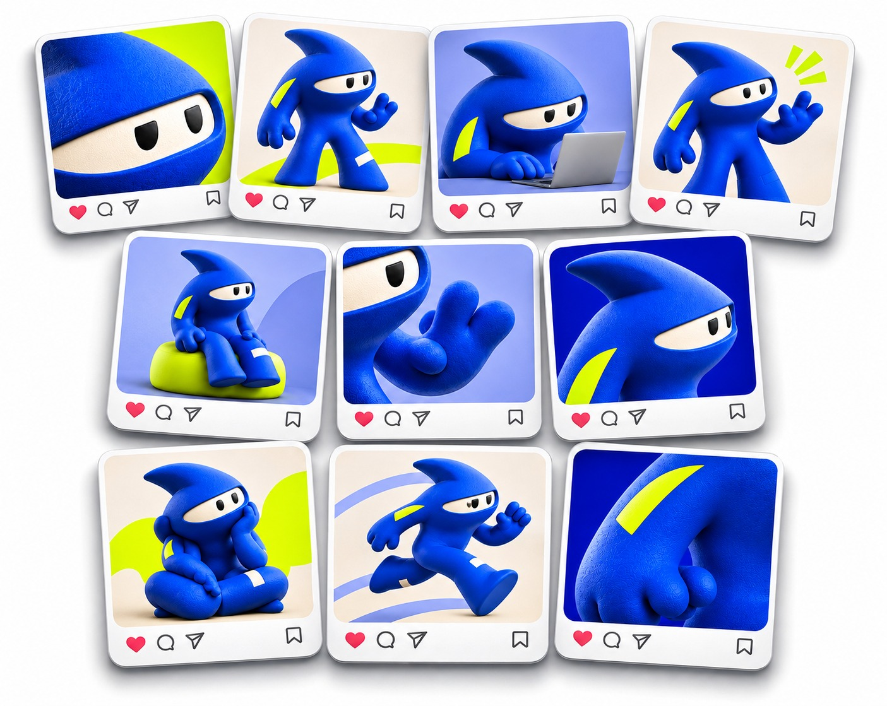
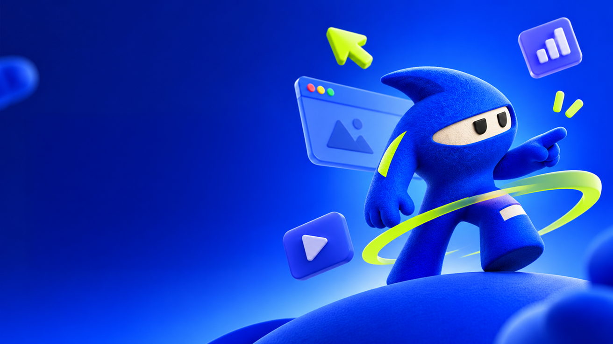
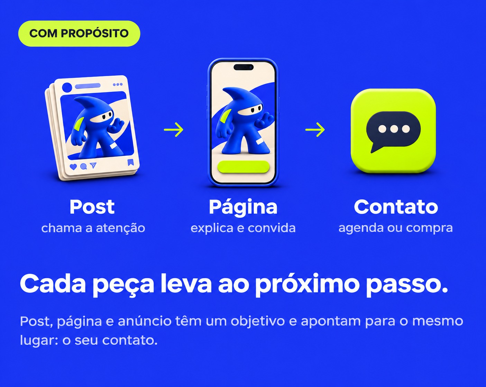

Muito post. Nenhum próximo passo.
As peças ocupam o calendário, mas o cliente não sabe se deve falar com você, agendar ou comprar.
A Reelô cria posts, vídeos, sites e campanhas com intenção: cada peça tem um objetivo e leva a pessoa ao próximo passo, do primeiro olá ao cliente fechado. IA usada de forma personalizada e profissional, sem fórmula pronta.

Quando o objetivo é encher o calendário, sobra peça e falta direção. A pessoa vê, curte e não sabe o que fazer depois.

As peças ocupam o calendário, mas o cliente não sabe se deve falar com você, agendar ou comprar.

Post, página e anúncio têm um objetivo e apontam para o mesmo lugar: o seu contato.
Quando o objetivo é ter volume, sobra peça e falta direção. O cliente percebe, e o seu dinheiro vaza no meio do caminho.
Sua marca aparece toda semana, mas nenhuma peça diz o que a pessoa deve fazer depois: falar com você, agendar, comprar.
Você paga pelo clique e o visitante chega num site lento, confuso ou sem botão claro.
Logo de um jeito, arte de outro, tom de voz de um terceiro. A marca parece pequena porque parece várias.
Por isso a marca fica só com foto e arte estática e perde atenção.
Os relatórios mostram curtida e alcance, mas não dizem onde investir no mês seguinte.
Reconheceu algum? O diagnóstico gratuito mostra por onde corrigir.
Peça seu diagnóstico ↗Antes de produzir qualquer peça, a gente responde três perguntas. Se uma resposta falta, a peça não vai ao ar. É assim que o conteúdo deixa de ser volume e vira caminho: do primeiro olá ao cliente fechado.
Contrate o caminho inteiro ou só a frente de que precisa hoje.
Definimos quem você quer atrair, a proposta de valor e o tom de voz.
Você recebe: documento de estratégia com persona, posicionamento e linha editorial.
Calendário com objetivo por peça, artes, carrosséis, roteiros e legendas para cada rede: Instagram, TikTok, LinkedIn e YouTube.
Você recebe: calendário mensal, peças prontas para publicar e relatório mensal.
Conceito, peças em vídeo, arte e texto, e gestão de tráfego pago no Meta Ads e no Google Ads para cada objetivo.
Você recebe: conceito, peças em todos os formatos e plano de mídia.
Roteiro, direção e edição de vídeos feitos com IA, em 9:16 e 16:9.
Você recebe: arquivos MP4 prontos para redes, anúncios e site.
Site institucional e páginas por oferta, rápidos, claros e com um próximo passo evidente.
Você recebe: página no ar, com hospedagem e manutenção nos pacotes que incluem.
Analisamos perfis, site, concorrência e oportunidades.
Você recebe: relatório com a ordem do que priorizar.
Não sabe por onde começar? Comece pelo diagnóstico.
Peça seu diagnóstico ↗Cada pacote leva tudo do anterior. Veja o que cada nível entrega, com o valor de cada um.
Valores mensais. Cada coluna é um pacote; compare linha a linha.
Posicionamento e presença
Organiza a comunicação e dá uma vitrine profissional: diagnóstico, estratégia, calendário, 12 publicações e roteiros de vídeo.
Captação e conversão
Transforma atenção em contato: tudo do Start, mais tráfego em 1 plataforma, landing page, 20 publicações e 3 vídeos.
IA e audiovisual
Escala com vídeo e mídia: tudo do Performance, mais 30 publicações, 5 vídeos (2 com IA), site e landing pages por campanha.
Fora do escopo em todos os pacotes: verba de mídia, gravação presencial, resposta a comentários e mensagens e mais de 2 rodadas de ajuste por peça e, nos vídeos com IA, mais de 3 alterações. A gestão de tráfego pago é incluída no Performance (1 plataforma) e no Scale, e é cobrada por plataforma quando adicionada ao Start ou a plataformas extras.
a partir de R$ 3.000
Projeto fechado · até 30 dias úteis
a partir de R$ 1.500
Lançamentos e promoções · 10 a 15 dias úteis
sob proposta
Logo, paleta e guia de uso da marca · conforme o escopo
a partir de R$ 5.000
Roteiro, direção e edição · 7 a 10 dias úteis por lote
sob proposta
Cobrado por plataforma, com relatório mensal · verba paga por você
Feito para negócios que querem sair do post solto e ter um caminho até a venda. Não é para quem procura serviço avulso barato ou gestão de anúncio sem o restante: para isso existem os serviços avulsos.
Toque no projeto para abrir o manual de marca completo.
Quatro etapas, do primeiro alinhamento ao relatório mensal.
Briefing, acessos e alinhamento das expectativas.
Você recebe: cronograma da primeira entrega.
Análise da presença atual, concorrência e oportunidades.
Você recebe: relatório com as prioridades.
Definição da persona, tom de voz e linha editorial.
Você recebe: documento de estratégia e calendário.
Conteúdo, vídeos e páginas no ar, com relatório mensal.
Você recebe: peças aprovadas por você antes de publicar e um relatório todo mês.
Uma conversa e o diagnóstico gratuito. A gente propõe o pacote ideal para o seu momento.
Sim. Os serviços avulsos existem para isso e podem virar pacote depois.
Não. Trabalhamos com as redes que fazem sentido para o seu público, além de site, vídeo e campanhas.
A gestão de tráfego pago está incluída no Performance (1 plataforma) e no Scale, e é cobrada por plataforma quando adicionada ao Start ou a plataformas extras. A verba dos anúncios é sua e vai direto para a plataforma.
Combinamos metas no diagnóstico e não prometemos número. Você acompanha o avanço no relatório mensal.
O foco são negócios locais e clínicas. Outros casos a gente avalia na conversa.
Você. Nada vai ao ar sem a sua aprovação.
Usamos IA em vídeos e na produção. Informamos quando uma peça usa IA e seguimos as regras de cada plataforma.
Os termos ficam combinados na proposta, com prazo e aviso de cancelamento definidos antes de começar.
Conte o que você precisa. Respondemos com o diagnóstico e o pacote que faz sentido, sem compromisso.